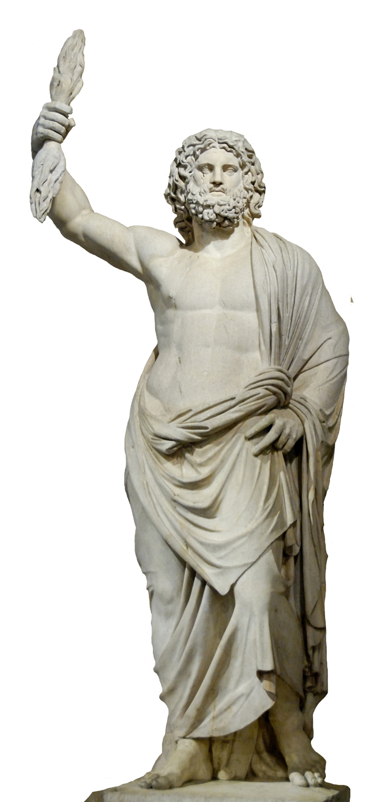
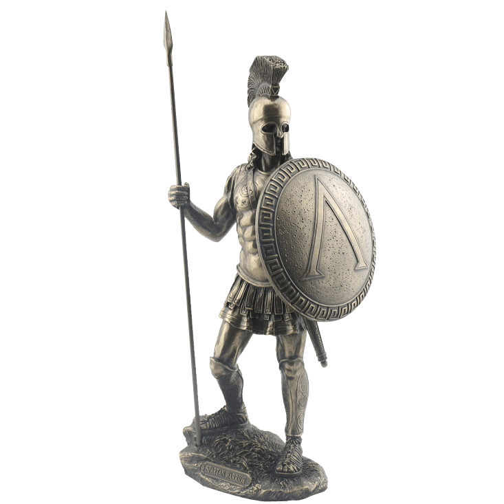
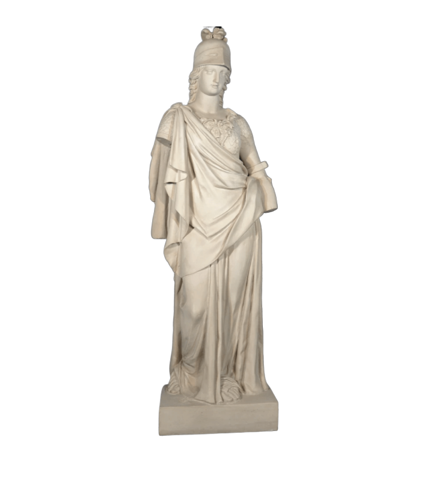
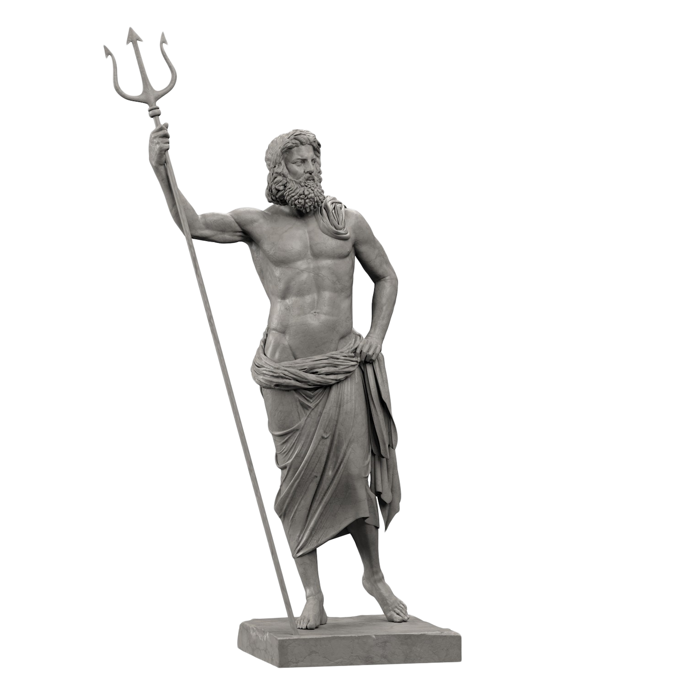

QUIZ




Jak nazywał się znany grecki matematyk?
Sofokles
Suchoklates
Pitagoras
W jaki sposób grecy dostali się do Troii?
Metrem
Koniem trojańskim
Uber'em
Co było atrybutem Dionizosa?
Wino
Berło i klucze
Stolicą Grecji jest:
Sewastopol
Rzym
Ateny
Odpowiednikiem województw w Starożytnej Grecji były:
Polis
Pola
Landy
Starożytni Grecy wierzyli w jednego Boga:
Prawda
Fałsz
Igrzyska Olimpijskie w Grecji odbywały się:
co rok
co 4 lata
co 2 lata
W którym roku odbyły się Pierwsze Igrzyska Olimpijskie?
2020 r.
772 r. p.n.e.
776 r. p.n.e.
792 r. p.n.e.
Greckim bogiem NIE był:
Hades
Zeus
Mars
Posejdon
Kto napisał Iliadę i Odyseję?
Odyseusz
Homer
Achilles
Sokrates